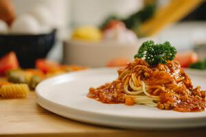
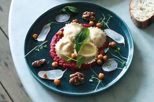

Confira nossos princípais pratos
Problems trying to resolve the conflict between the two major realms of Classical physics: Newtonian mechanics

Linguini Con Filetto Di Manzo e Funghi
Massa fresca ao molho de tomate san marzano, manjericão, linguiça apimentada e queijo pegpino ralado

Lasagna Alla Bolognese
Massa fresca recheada com molho à bolonhesa, presunto e muçarela de búfala, gratinada no frono com queijo parmessão

Ravioli Alla Caprese
Massa recheada com mussarela de (perguntar) ao molho de tomate fresco e azeite de manjericão